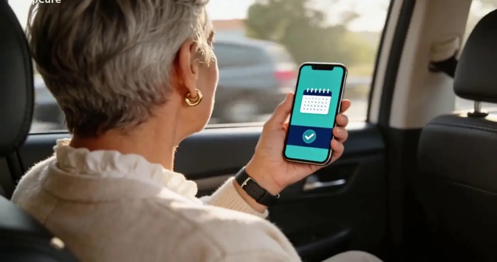

Soluções / Paciente e família
O cuidado que cabe no bolso do paciente.
App e WhatsApp para lembrar os remédios, guardar o histórico e entregar um resumo de emergência quando o paciente não puder falar por si.
A jornada do paciente.
Da receita ao lembrete, sem digitar nada.
Foto da receita
O paciente fotografa a receita ou o diagnóstico pelo app ou envia pelo WhatsApp.
Leitura e confirmação
A inteligência artificial lê medicamentos, doses e horários; o paciente confere e confirma a compra.
Lembretes
Na hora de cada dose chega um lembrete com os botões “Tomei”, “Adiar” e “Não vou tomar”.
Acompanhamento
A adesão e os sinais do relógio ou da pulseira chegam à central, que avisa a família e o médico quando algo foge do padrão.
O que o paciente tem nas mãos.
- Resumo de emergência — QR code com medicamentos em uso, alergias, doenças e últimos diagnósticos para a equipe que atender.
- Relógio e pulseira — Leitura automática de batimentos, pressão, oxigenação e temperatura de wearables compatíveis.
- Cartão com chip — Para quem não tem smartwatch: um cartão de baixo custo identifica o paciente no ponto de atendimento.
- WhatsApp ou app — O paciente escolhe o canal. Funciona em português e espanhol.
- Família por perto — Quem cuida recebe avisos de doses perdidas e alertas da central.
- Histórico único — Exames, receitas e medições no mesmo lugar, prontos para a próxima consulta.



Para quem toma remédio todo dia — e para quem cuida.
Doenças crônicas
Hipertensão, diabetes e outros tratamentos contínuos.
Idosos
Mais autonomia em casa, com a família informada.
Cuidadores
Filhos e cuidadores acompanham sem precisar ligar a toda hora.
Experimente o app em modo demonstração: abra no celular e use “Adicionar à tela inicial” para instalar.
Tudo ligado ao mesmo histórico.

Hospital e clínica
Sinais vitais direto no sistema e a família informada.
Saiba mais →
Farmácia
Receita, dispensação e adesão ao tratamento no mesmo histórico.
Saiba mais →
Home care
O cuidado continua em casa depois da alta.
Saiba mais →
Célula de atendimento
Sala de 9 m² com triagem e teleconsulta, onde as pessoas estão.
Saiba mais →
Unidade móvel
Triagem e duas cabines de teleconsulta sobre rodas.
Saiba mais →